| 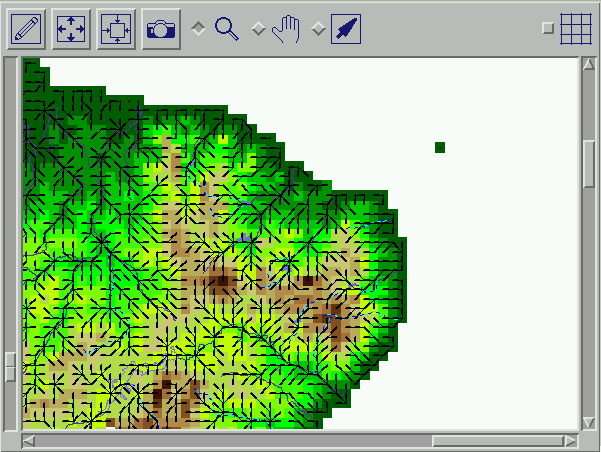 |
Scroll Bars
There are three scroll bars located on the 2Dviewer. These scroll bars can be used to adjust what is seen in the viewer.
Left Scroll Bar
The scroll bar located on the left side of
the viewer can be used to zoom in and out. Sliding the scroll bar up, zooms
out from the center, and sliding the scroll bar down has the opposite
effect
Bottom Scroll Bar
The scroll bar located on the bottom of the
viewer can be used to pan to the right or left. Sliding the scroll bar left,
causes the display to pan to the left. Sliding the scroll bar to the right
causes the display to pan to the right.
Right Scroll Bar
The scroll bar located on the right hand side of
the viewer can be used to pan up and down. Sliding the scroll bar up, causes
the display to pan upward. Sliding the scroll bar down causes the display to
pan downward.
Display Buttons
| Draw | 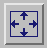Full-extent | 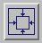Layer-extent | Screen Grab |
Draw
The Draw button causes the display window to be redrawn. This is often
necessary in order to update the dislay after turning on or off functions or
data layers. The screen does not update until the user clicks this
button.
Full-extent
The full-extent button sets the display area such that all of the open data
objects can drawn in their entirety within the display window. This can be of
use when it is necessary to view all of the data at one time. It also makes a
handy default extent to fall back on if the exact location of the cursor
within the data is no longer known.
Layer-extent
The Layer-extent button sets the display area to the maximum extent of the
highlighted data object in the Active Data list. This is useful when it is
desired to see the entire extent of the data layer currently being edited.
The Screen-grab tool is not available in this version of RiverGIS.
Manipulation Buttons
| Magnify | Pull | 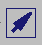Pointer | 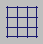Graticule |
Magnify
The Magnify tool is used to define the displayed area in the 2DViewer.
When the Magnify checkbox is highlighted the mouse can be used to define a
rectangle in the 2DViewer, which will become the new extent for the display
window. To produce the rectangle, move the mouse in the display window to the
location for the upper left corner. Press the left or right mouse button and
drag until the box encloses the desired area. When the mouse button is
released the rectangle will remain displayed in the viewer. If the desired
area is not within the rectangle, it can be removed by clicking the left mouse
button, and then a new rectangle can be produced. When the desired area is
within the rectangle, click the right mouse button and the screen will be
redrawn with this extent.
Pull
The Pull tool is used to pan within the 2Dviewer in any direction. When the
Pull checkbox is highlighted any mouse button can used to choose the point
which is to be pulled to a new location. With the mouse over the location,
press any button and drag to the new location. When the mouse button is
released the display will redraw. The location in the data where the mouse
button was first pressed is now located where the button was released. It can
be thought of as attaching a rubber band to the first location and pulling to
a new location.
Pointer
When the pointer checkbox is highlighted the selection icon in the 2Dviewer
is displayed as the cross-hair. When any mouse button is pressed a window pops
up to display information about that particular location of the the currently
highlighted data object in the Active Data list.
In order to edit networks the pointer checkbox
must be enabled.
Graticule
When this button is enabled, a graticule is displayed over the data
displayed in the 2Dviewer. The resolution of the boxes is determined by the
resolution of the data being displayed and the current extent of the
display.
Some table manipulations are controlled from the RiverGIS control panel. In order to select records in a table the dataset must be active and the selection toggle must be set for single or multiple selections.
| 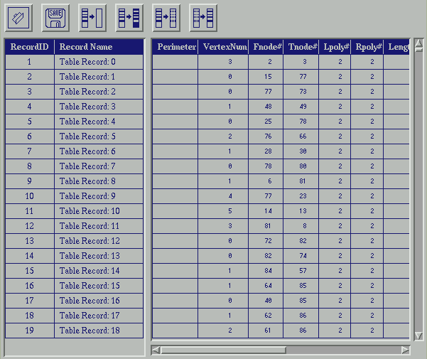 |
| Left Panel | Record ID and Record Name Fields | |
| Right Panel | Record Attributes | |
Selection Buttons
| 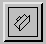Load Selection | 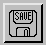Save Selection |
| 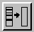Clear selections | 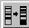Reverse selections |
| 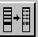Idle selections | 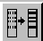Idle reverse |
Load Selection
Loads saved selection group
Save Selection
Writes out file with selection values (use to work wit category fields)
ClearSelections
Clears all selections made in table
Reverse Selections
Reverses selections in table - all selected records are
unselected and all unselected records become the selected records
Idle Selections
Makes the selected records idle, these records are not effected by calculations
or plotted in xy plots
Idle Reverse
Makes all of the idle items selected and all records active
Sort Options
The table can be sorted by field by left clicking on the field name. Sort Options include:
Ascending
Decending
Select - Allows comparison of fields or comparison of a field against a constant value. Sequencing functionality.
Unselect - Unselect may also be done be criteria
Unique - Finds duplicates and selects the 1st record that is duplicated. can be used to find duplicate stations in a cell.
Record Menu Items -- To be developed
| 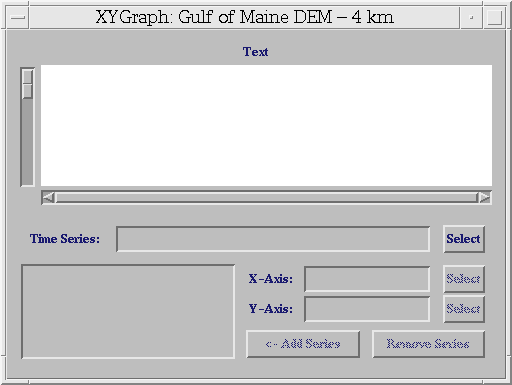 |
Scroll Bars
Left
This window is opened by choosing Display->Open Graph. Select time series relation (created using File->Relate, X-axis ( date), Y-axis (discharge, temperature, precipitation, nutrient concentration.